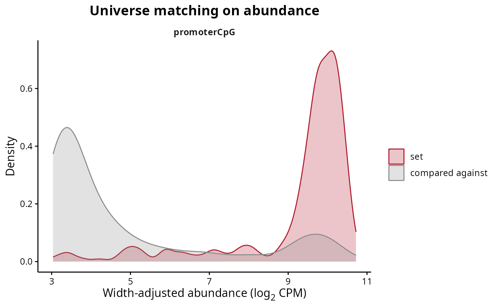
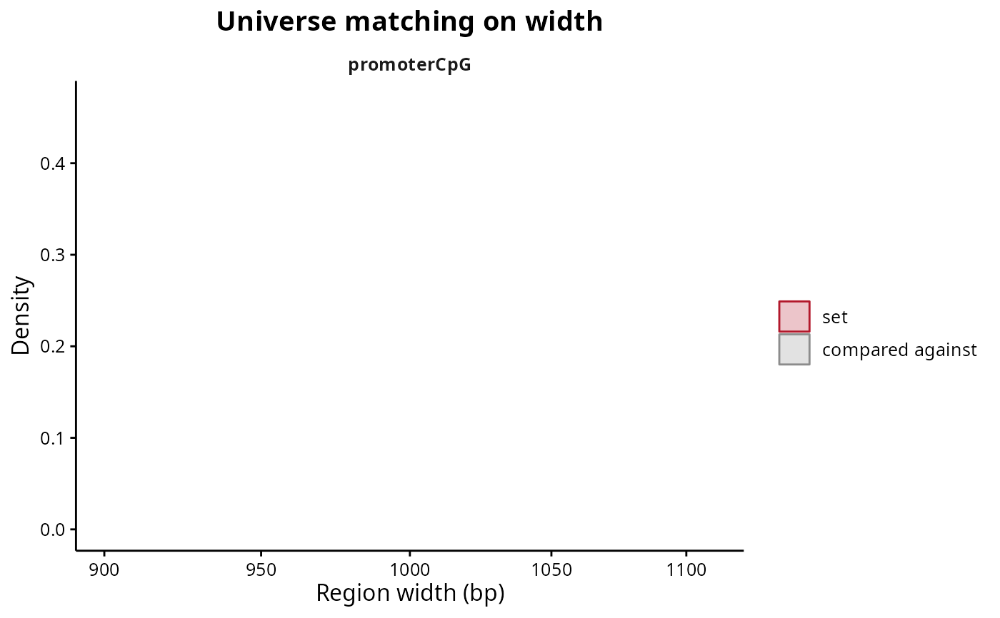

Compares a region set with the rows it is compared against, on width and on abundance. The two distributions should sit on top of each other; where they do not, the competitive test is partly reading the difference between the intervals rather than the difference between the biologies.
plotUniverseMatching(
object,
universe = NULL,
contrast = NULL,
set = NULL,
covariate = "abundance",
colours = NULL,
title = NULL,
legendPosition = "right",
baseSize = 12
)RegionSetDE.fit or RegionSetDE.setResults object, both of which carry the universe they used.
RegionSetDE.universe object. Default: NULL, the one stored in object.
String with the name of the contrast, or its position, when object holds several of them. Default: NULL.
Character vector with the names of the region sets to draw. Default: NULL, all of them.
String with the covariate on the axis, either "width" or "abundance". Default: "abundance".
Character vector of length two with the colours of the set and of the rows it is compared against. Default: NULL.
String with the title of the plot, rendered as markdown. Default: NULL.
String with the position of the legend. Default: "right".
Numeric value with the base font size. Default: 12.
A ggplot object.
One panel per region set, holding two density curves: the regions of the set and the rows it is compared against. Read it as a check on the matching rather than as a result. Curves lying on top of each other mean the two groups are comparable on that covariate, so a difference found by testRegionSets cannot be attributed to it. Curves offset from each other mean the matching did not find enough eligible rows in some strata, which happens when a set occupies a corner of the width or abundance range that nothing else reaches, and the numbers behind it are in the diagnostics slot of the universe.
fit <- loadExampleData("fit", verbose = FALSE)
setResults <- testRegionSets(fit, contrast = c("condition", "SHR", "BN"),
verbose = FALSE)
# Whether the universe really matches the set it is compared against
plotUniverseMatching(setResults, set = "promoterCpG")

plotUniverseMatching(setResults, set = "promoterCpG", covariate = "width")
